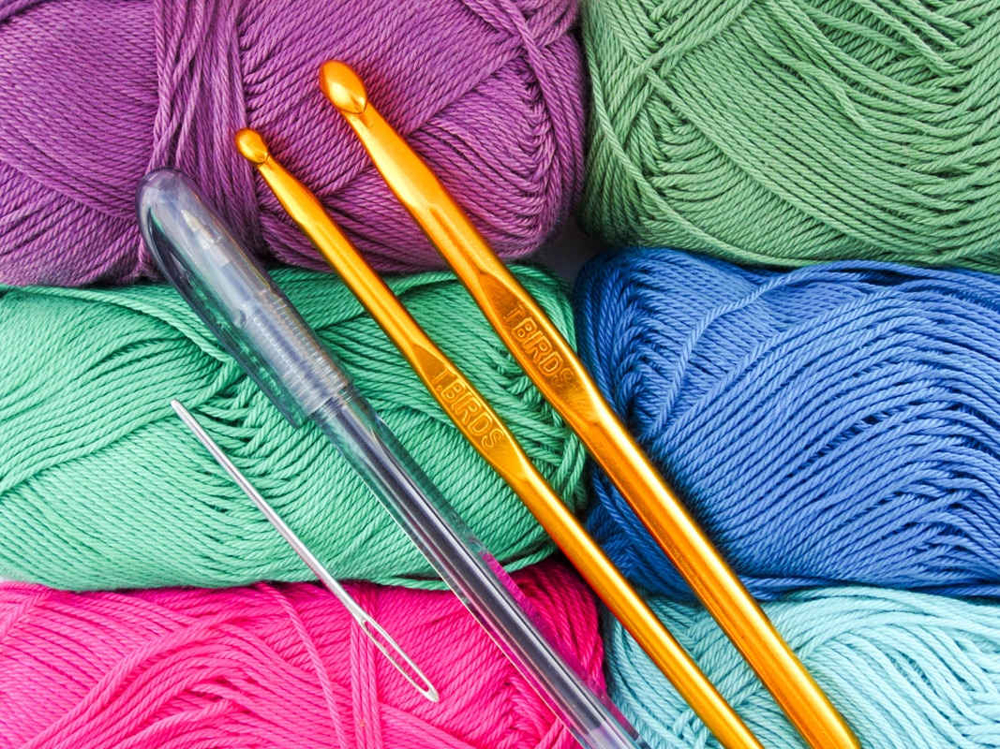

Välkommen till min webbplats!
Hej och välkommen till min webbplats!
Här kommer jag att dela med mig av mina virkverk samt
lite
mönster och maskor man kan använda sig av.
Syftet med denna webbplats är
att visa mina verk och
inspirera andra att börja virka!
